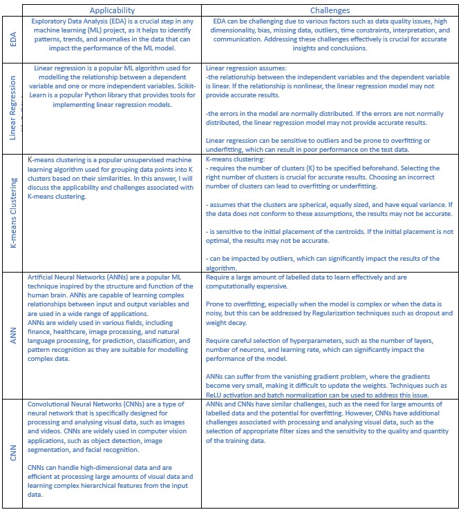

Seminars Pre-work
As I completed each pre-work activities in advance of Seminars, I made some notes focusing on application and challanges for each algorithm which I then completemented with extra insights from the seminar itself
For future reference, I compiled my notes on a table
In summary, EDA is important for understanding and analying the data, Linear Regression with Scikit-Learn is a simple and efficient technique for regression analysis, K-means clustering is a simple and effective technique for unsupervised learning, ANNs are powerful models for supervised learning tasks, and CNNs are specialized models for processing and analyzing visual data. The choice of technique depends on the specific problem, the type and quality of the data, and the computational resources available.